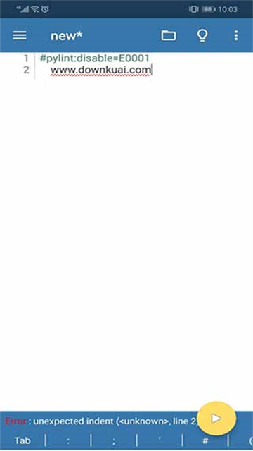

安卓手机上零成本跑 Python——Pydroid 3 从安装到动手写代码
还在纠结出门想练 Python 却没带电脑？Pydroid 3 让 Android 手机直接变成便携 IDE。跟着这篇教程，十分钟把解释器、pip 包管理、代码编辑器全跑起来。
有没有过这种时候——地铁上刷到一段 Python 小算法，想跑一下验证结果，身边却只有手机；或者上课老师发了个 .ipynb 练习本，想在课间对着跑，掏不开电脑。Pydroid 3 就是专门解决这件事的：它把 CPython 解释器、pip 包管理、代码编辑器和终端全部打包进一个 Android App。想了解更多可以去官网看看，装完就能写、写完就能跑。
准备条件
- 设备：Android 手机或平板，系统版本 7.0 以上（iOS 版功能覆盖度会打折扣，优先 Android）
- 存储空间：建议预留 500MB 以上，科学库装多了会膨胀得比较快
- 网络：首次安装和 pip 装包需要联网，装好常用库之后可以离线运行
- 键盘：纯触摸也能写代码，但长时间敲 Python 建议配一个蓝牙键盘，或者开启 Pydroid 自带的扩展键盘栏
第一步：装好 Pydroid 3 本体

安装包从下载获取，装好之后点开 App，你会看到左侧一个隐藏式的抽屉菜单——这是整个应用的导航中枢，后面所有功能都从这里进。先别急着写代码，我们先把环境探一遍。
点左侧菜单 → Terminal，你会进入一个内置终端。敲一行 python --version 回车，应该能看到 Python 3.x 的版本号输出。如果版本号能正常打印，说明解释器已经就绪了，不需要你手动装任何东西。
这里注意一个细节：Pydroid 用的是内置的 CPython 解释器，不是把代码发到远端跑。你关掉网络、关掉 Wi-Fi，再跑同样的命令也能通——这和浏览器里的在线 Python IDE 本质不同。
第二步：用编辑器写第一段代码
还是从左侧菜单进 → Editor，这是 Pydroid 的代码编辑器。默认会开一个 untitled 文件，你可以敲：
print("Hello Pydroid")
for i in range(3):
print(f"loop {i}")然后点右上角的 Run 按钮（一个绿色的三角形），屏幕下方会弹出一个 Terminal 面板，里面打印出三行 loop 加一个 Hello。编辑器本身支持语法高亮、自动缩进、括号配对这些基本功能，写短代码完全够用。

如果你发现 Run 按钮点了之后没反应，先检查一下代码里有没有语法错误——Pydroid 不会帮你做实时的语法检查，错误信息会直接打印在 Terminal 里。新手最容易犯的一个错是混用中文引号，Python 只认英文的 "" 和 ''。
第三步：用 pip 装个第三方库
内置解释器够用，但真要干活还得装库。Pydroid 有两条路可以装包：图形界面和命令行。
图形界面方式：左侧菜单 → Pip，顶部有个搜索框，搜你想要的包名（比如 requests），从结果里选中它，点 Install 就行。已装包也在这个面板里列出来，旁边有版本号，可以随时 Uninstall。
命令行方式：Terminal 里直接敲标准 pip 命令：
pip install requests
pip install numpy pandas matplotlib一次性装多个包、指定版本号（pip install openpyxl>=3.0）的时候，命令行比图形界面灵活得多。
Pydroid 的 pip 能装科学库是个亮点——普通 Android 环境装 NumPy、SciPy 会炸，因为没有合适的 C 编译器、也没有 ARM 架构的 wheel。Pydroid 内置了交叉编译器，还维护了一份 Android ARM 的预编译 wheel 仓库，pip 默认优先查这个仓库，绝大多数常见库直接就能装，跳过源码编译那一步。wheel 覆盖范围和编译失败的排查思路，pydroid3文档里有更详细的列表和案例。
第四步：跑一个带图表的小脚本
装好 matplotlib 和 numpy 之后，我们来写个折线图验证一下科学计算能力。在编辑器里新建一个文件：
import numpy as np
import matplotlib.pyplot as plt
x = np.linspace(0, 2 * np.pi, 100)
y = np.sin(x)
plt.plot(x, y)
plt.title("y = sin(x)")
plt.show()点 Run，几秒之后屏幕上会弹出一张折线图——不是在 Terminal 里打字符画，是真的弹出一个 GUI 窗口显示 Matplotlib 渲染的图。在手机屏幕上虽然不是最佳看图体验，但胜在能跑就行——出差路上快速确认数据趋势、午休时给同事演示一个小算法，比带电脑轻松得多。
常见卡点
卡点一：pip install 报 wheel 找不到
Pydroid 的 wheel 仓库不可能囊括所有 PyPI 包，某些冷门包会 fallback 到源码编译，然后因为缺少系统依赖而失败。排查顺序：先确认网络没问题 → 再看这个包是不是纯 Python 的（纯 Python 包不需要编译，一般都能装）→ 如果包有 C 扩展，大概率是 ARM wheel 没覆盖到，换个同类库试试。
卡点二：切后台回来执行状态没了
Android 的系统会杀后台进程。Pydroid 切到后台一会儿，再回来的时候之前的 kernel 状态、Jupyter 的单元执行上下文都可能丢失。解决办法：长时间运行的任务不要依赖手机的前后台切换，写完就跑、跑完就看，别让它在后台挂着。
卡点三：键盘敲得难受
手机上敲 Python 最大的痛点是括号和缩进。Pydroid 自带一个扩展键盘栏——在 Settings 里打开，可以在键盘顶部多一排括号、引号、Tab 键和常用的 Python 关键字，比原生软键盘好用很多。真要长时间写，还是建议蓝牙键盘。
往下还能玩什么
基础跑通之后，可以试试 Pydroid 的几个进阶方向：Jupyter Notebook 查看和运行 .ipynb 文件（Android 版偏查看，iOS 版编辑功能更完整）、Pygame 2D 写个小游戏原型直接在手机上跑、Kivy 做跨平台 GUI 的移动端原型验证，甚至开 Proot root 模式跑一个完整的 Linux 用户空间跑定时脚本。
对大多数人来说，Pydroid 3 最核心的价值就是「出门也能摸 Python」——不需要装 IDE、不需要配环境、不需要联网，装完就能打开编辑器敲代码。写这篇文的时候顺手把相关资料整理了一份，分别放在了GitHub、Gitee和GitCode上，国内访问走 Gitee 或 GitCode 会快一些。